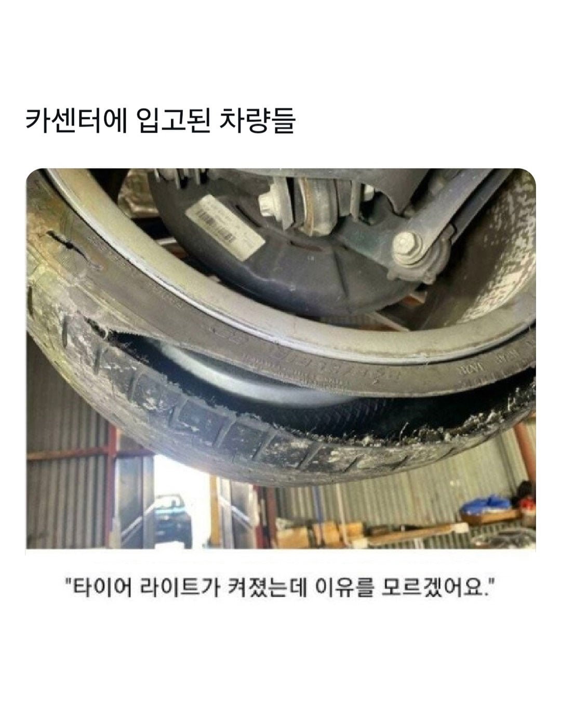
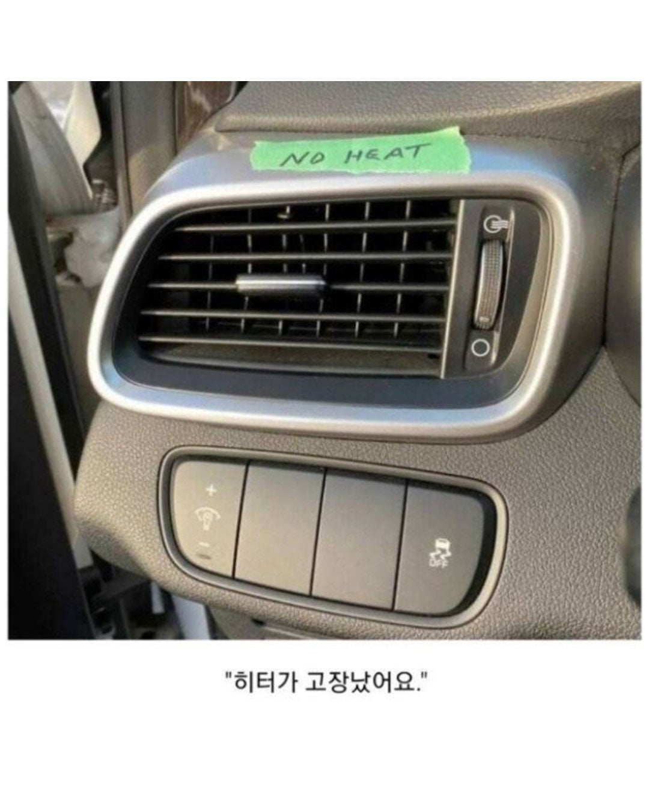
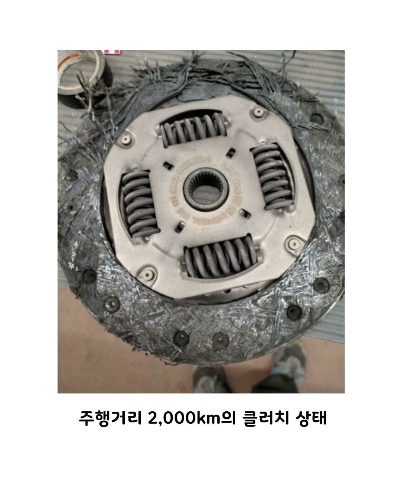
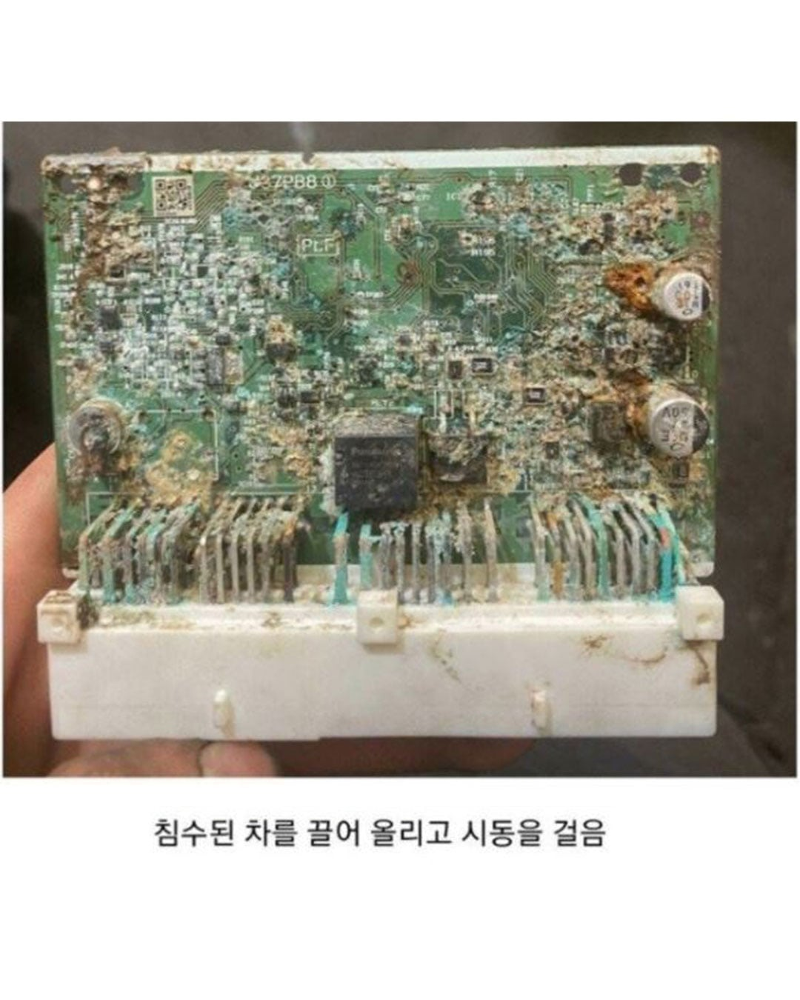
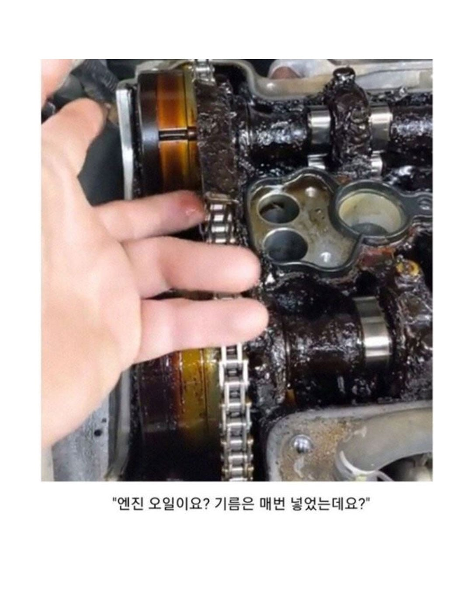
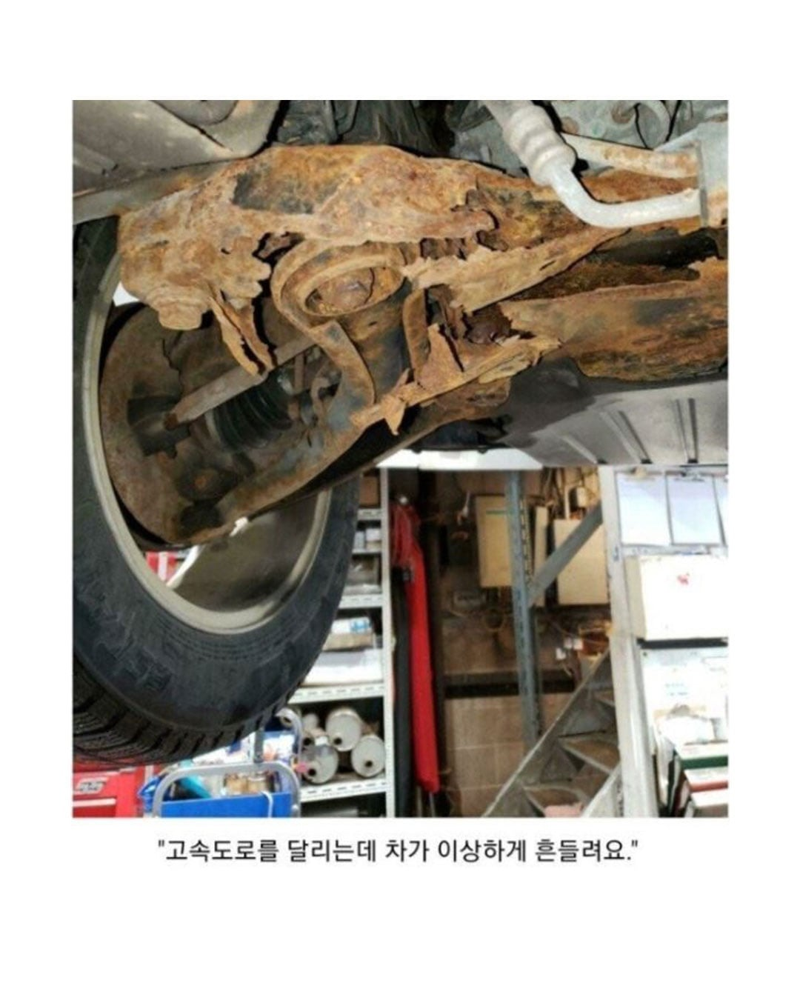

양발운전가능하게 해주는거임
수동에 달려잇음 오토는 없음
스틱차 기어 변속할때 클러치 패달 밟거나 떼면 엔진하고 변속기 동력축이 붙었다 떨어졌다 하는데, 저 클러치 디스크가 2000km만에 씹창났다는건 매우 이른 시기에 고장났다는거임
수동차량 기어 변경할때, 기어랑 엔진이랑 연결 끊어주는 역할일껄?
돌아가는 두축을 원할때 땠다 붙였다 하는거
수동이나 DCT에 들어감
대체 뭔짓을 하면 2000키로만에 디스크가 저렇게 되냐
운전면허시험에 차량 유지/정비 과목 넣어야함
2000km에 뭘 하면 클러치가 저러냐...
수동차인데 지독하게 반클러치를 많이 잡았나?
히터는 뭔가 했네ㅋㅋㅋㅋㅋㅋ
반클러치 잡았나..
히터는뭐임?
바람나오는 구멍 닫아둠
그냥 지가 내려 놓음. 안나오게
바람 안나오게
바람 나오는 입구를 막아놓음
바람나오는 구멍을 닫아둠
앙♥ 구멍 막혀버렷 바람
너구나
클러치는 작정하고 작살내도 저렇게 못할거같은데
반클러치 밞고 차 잘안간다고 액셀 붕붕거리면 십분만에 저렇게됨
클러치는 ㅅㅂㅋㅋ 데자부 갈겼나
반클러치 엄청썼나보네
와... 클러치 신기하네
클러치도 클러치인데 타이어가 파스가 났는데 모른다고? 말이 됨?
타이어 등 들어왓는데 계속타다가 터져서 입고됫겟지
클러치 ㅅㅂㅋㅋㅋ 타쿠미냐?
아무리 반클 잡아도 2천에 저지랄은 안 날 것 같은데 ㄷㄷ
저 상태로 카센터 까지 간거 보면 차는 튼튼하게 잘만들었다 봐야겠네..
아줌마가타는 구형 마티즈 쇳소리 엄청심한데 오일 갈으셨나 물어보려다 오지랖인거 같아서 넘어갔다.. 차는 기름만 넣으면 된다고 생각하는사람도 있어서 놀랐음..
클러치 저지랄은 고속도로달리다가 지가 꼴려서 후진기억 억지로밀어넣었나 ㅋㅋㅋ
클러치는 한반향 이라서 상관없지 않음?
다른거는 다 이해했는데
클러치 저렇게생긴줄 처음알았다 ㄷㄷ
신기하게생겼네
클러치는 뭔짓을하면 저렇게될까?? 모르니까 답답하네
막짤 멤버는 뭔짓을해서 저렇게됐을까
염화칼슘 뿌린곳 지나가고 하부세차 안하고 지하주차장 장기방치
클러치 안밟고 기어 바꾸기?
차안섰는데 기어바꾸는것도(오토기준) 극혐인데 ㄷㄷ
그건 변속기 내 싱크로매시가 씹창될 확률이 높고, 업 시프트일경우 대개 문제는 안될거임
반크러치를 상시 하고 댕겼나?
그 우리나라에도 7만동안 엔진오일 안간 차량 있지않았나
구형 소렌토였나 ㅋㅋㅋ 엔진 내구성만 입증됨 ㅋㅋㅋ
2.0R 2.2R 엔진이임?
반클로 풀악셀이라도 밟은건가? 클러치는 어떻게 해야 고장남?
딴건 그렇다쳐도 하부는 뭐 어떻게 관리해야하냐...
역시 인구가 많고 땅이 넓은 만큼
한국과는 비교도 안 되는 구만
신파뽑아서 오만까지 오일한번도 안갈고 탄 동생 생각나네 ㅋㅋㅋㅋ 얘기듣고 멱살 끌고 센터갔는데 오일갈때 아무것도 언나오던게 충격. 근데 차는 잘 굴러감 ㅋㅋ
탈판에 이런거 주기적으로 씨리즈로 올려주는 개붕이 있다
이런거 재밌어하면 가서 보기
지금 사고나서 렌트 타고 있는데 국물류 정비 하긴 하겠지? 15000km 정도 달린 차 받았는데 그냥 갑자기 궁금하네 1년에 한 번 교환할까? 아니면 만키로마다 교환할까
클러치는 머야